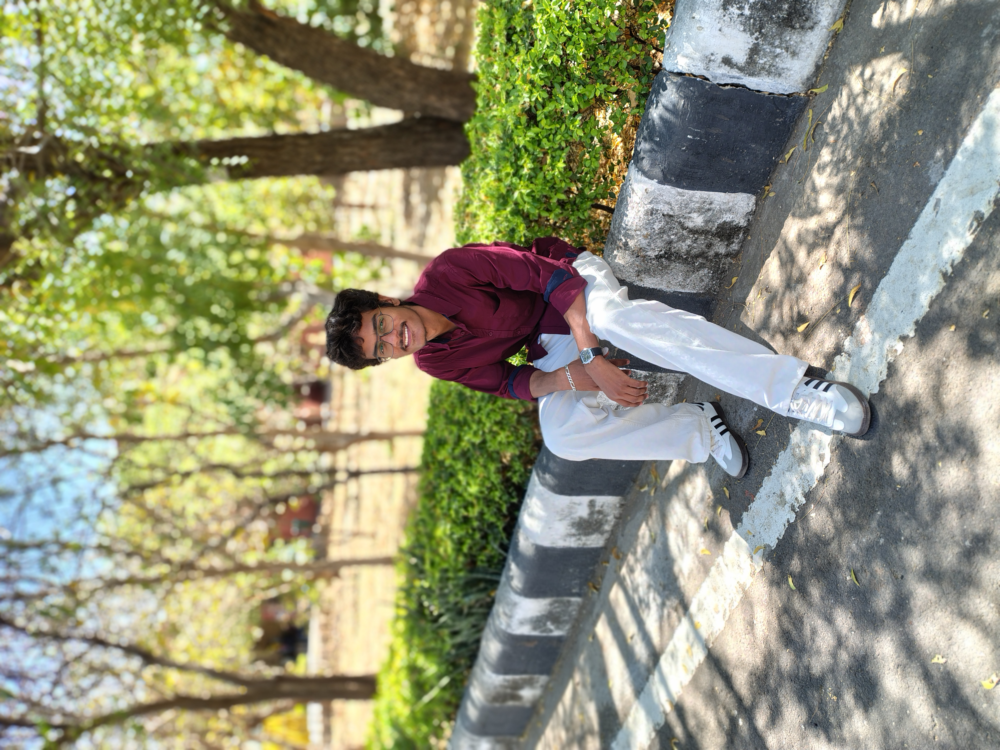
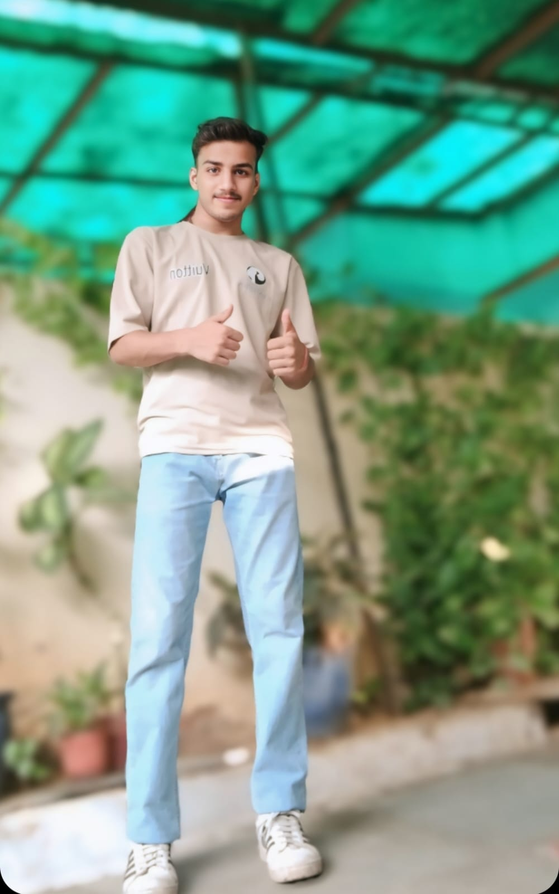

Vinay Kumar Goswami
Backend DeveloperVinay is currently pursuing his B.Tech (3rd Year) at Poornima Institute of Engineering and Technology (PIET). He specializes in backend development, handling APIs, server-side architecture, and database management. With a strong foundation in AI, he ensures the backend operates efficiently and securely.

Laksh Vyas
Frontend DeveloperLaksh is also a 3rd year B.Tech student at Poornima Institute of Engineering and Technology (PIET). As a frontend developer, he brings ideas to life through clean and modern UI designs, using technologies like HTML, CSS, JavaScript, and frameworks. He is passionate about bridging functionality and aesthetics in health-tech applications.